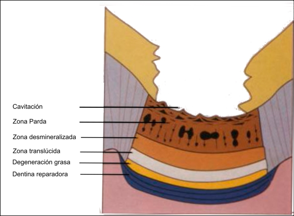

Caries en Dentina
Un corte transversal no descalcificado de un diente con una lesión avanzada por caries de la dentina que no haya alcanzado la pulpa mostrará cinco zonas microscópicas que revelan las etapas de la caries de la dentina que termina produciendo una cavidad.
- Degeneración grasa: refleja los más precoces cambios asociados a la infección por caries, donde las enzimas bacterianas han avanzado por delante de las bacterias en los túbulos de dentina.
- Zona transparente: es un banda de dentina hipermineralizada en la cual los túbulos de dentina están esclerosados debido a nuevo depósito de sales calcificadoras liberadas de la zona desmineralizada.
- Zona de desmineralización: está formada por dentina más blanda que la normal debido a la acción inicial de las enzimas bacterianas.
- Zona de coloración parda: se debe a la reducción del contenido mineral y a la presencia de túbulos de dentina distendidos rellenos de bacterias. Esta zona suele ser lo bastante blanda como para ser eliminada con un instrumento manual.
- Zona de cavitación: se produce porque no queda mineralización y el componente orgánico es disuelto parcialmente por las bacterias. Esta es la base clínica de la cavidad que se descama fácilmente en capas a lo largo de las líneas sucesivas de crecimiento.
